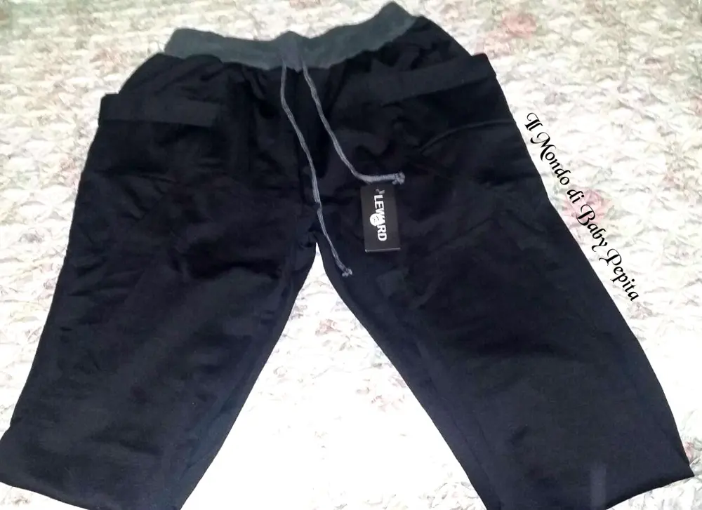
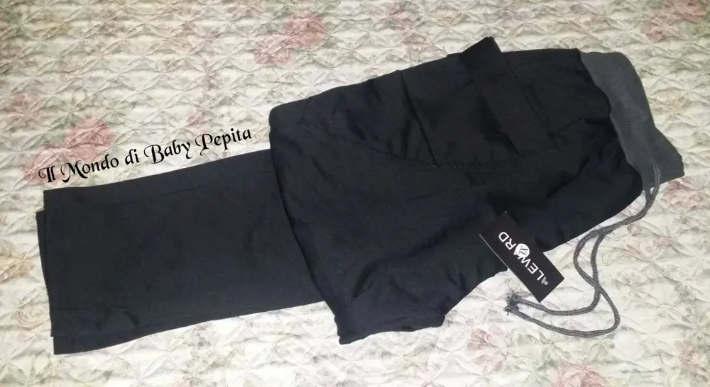
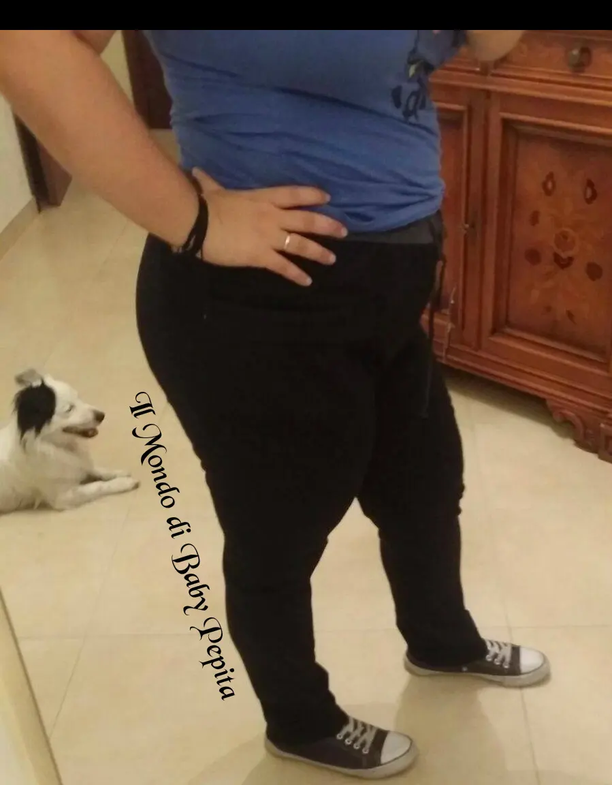
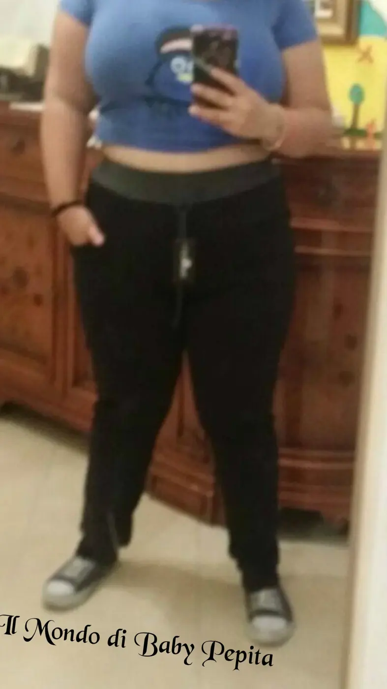
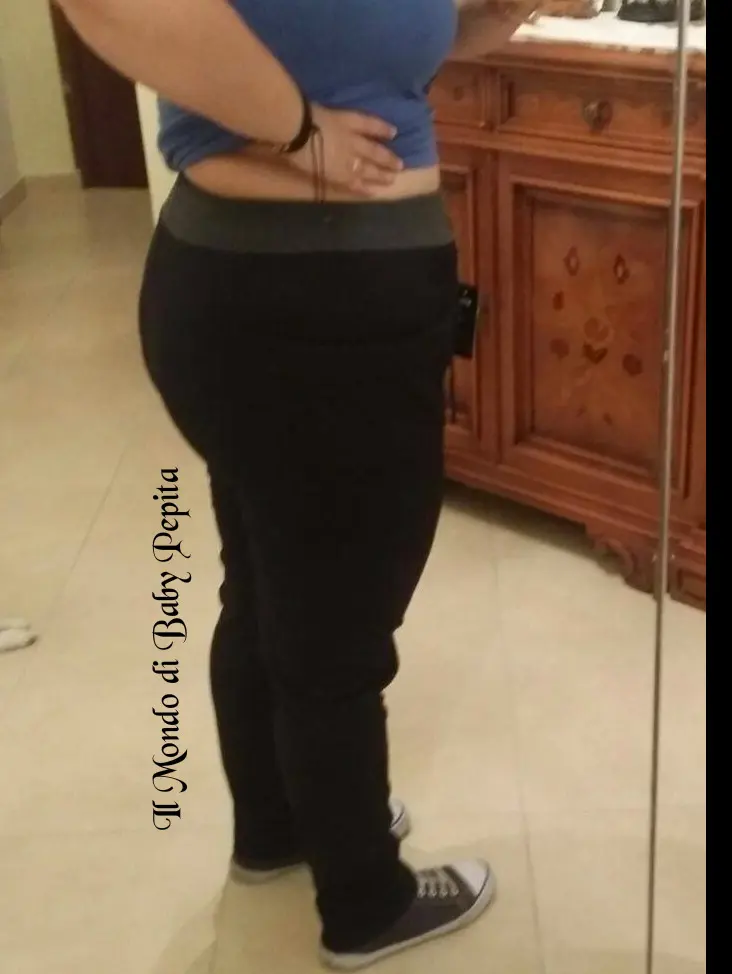
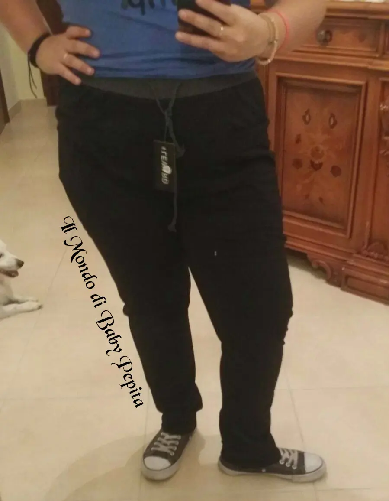
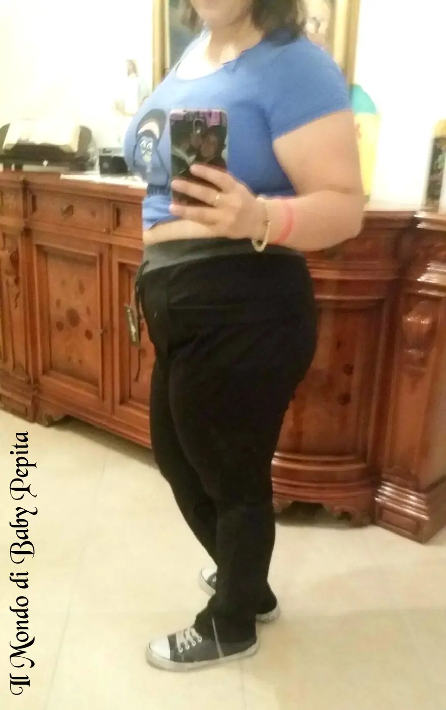

Leward - pantaloni
 Salve. . Rientriamo nella normalità delle mie amate recensioni :DOggi vi parlo di abbigliamento . .
Salve. . Rientriamo nella normalità delle mie amate recensioni :DOggi vi parlo di abbigliamento . . Ebbene sì, di un venditore che è stato così gentile a mandarmi un capo d'abbigliamento . .Ovviamente parliamo sempre di Amazon, e il venditore è Leward
Ebbene sì, di un venditore che è stato così gentile a mandarmi un capo d'abbigliamento . .Ovviamente parliamo sempre di Amazon, e il venditore è Leward

Il prodotto in questione è un pantalone, segnato nella sezione UOMO ma ragazzi, adattabilissimo anche a noi donne. Infatti io l'ho preso per me e mia sorella comunque.
Essendo un pantalone morbido, fatto a tuta, molto sportivo non sembra nemmeno modello maschile. Scelta tra 4 colori, io ho preferito il nero, così da indossare sempre.
Scelta tra 4 colori, io ho preferito il nero, così da indossare sempre.
Come potete vedere in foto ha una fascia - molla in vita grigia che comunque non stressa ma anch'essa è molto confortevole.
Tasche grandi, davvero utilissime e profonde.
E un'altra cosa che mi piace di questo pantalone che non ha le molle alle caviglie di modo che non stringe.
Tessuto che vi consiglio però, di indossare nei periodi invernali, non è felpato all'interno ma è comunque un tessuto davvero caldo.
(ps: scusate la qualità delle foto questa volta)Un ulteriore consiglio che mi sento di dare è prendere una taglia in più perchè essendo sportivi vestono un pò più larghi, infatti io sono solitamente L ed ho preso una XL e calzano perfettamente.Prezzo: 17,59 € Se volete acquistarlo: https://www.amazon.it/Leward-Pantaloni-Uomo-nero-XL/dp/B01DF4WDJ8/ref=sr_1_1?s=apparel&ie=UTF8&qid=1473952412&sr=1-1
Per quanto riguarda me seguitemi su:FACEBOOKINSTAGRAMTWITTER